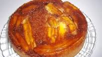

Bolo de brigadeiro

Massa:
- 1 xícara de açúcar
- 2 xícaras de farinha de trigo
- 2 colheres de margarina
- 3 ovos
- 1 xícara de leite
- 1 colher (sopa) de fermento
Banana caramelizada:
- 1 xícara e meia de açúcar
- 4 a 6 bananas nanicas maduras
- Canela em pó
- ½ copo de água
- Em uma panela coloque o açúcar e leve ao fogo baixo até virar uma calda.
- Acrescente 1/2 copo de água e espere desfazer os torrões de açúcar.
- Coloque as bananas cortadas em rodelas não muito finas, mexa e deixe cozinhar um pouco.
- Por fim, acrescente a canela a seu gosto.
- Deixe esfriar enquanto faz a massa.
- Bata na batedeira os ovos a margarina e o açúcar até ficar uma mistura homogênea.
- Acrescente a farinha e o leite aos poucos e bata bem.
- Desligue a batedeira e coloque o fermento em pó.
- Mexa devagar com uma colher grande.
- Unte uma forma redonda com furo no meio.
- Coloque uma pequena quantidade da massa por baixo da forma, depois um pouco da banana caramelizada.
- Por último, misture a banana com a massa e coloque na forma.
- Asse em forno médio, pré-aquecido, por aproximadamente 40 minutos, dependendo do forno.